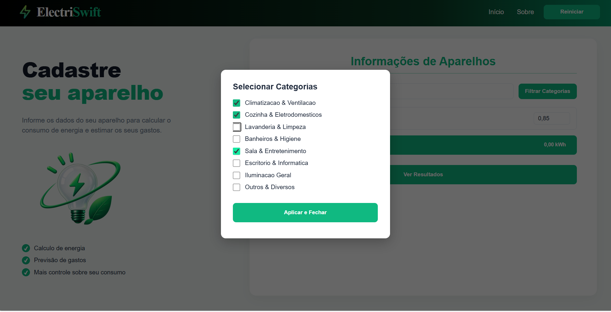
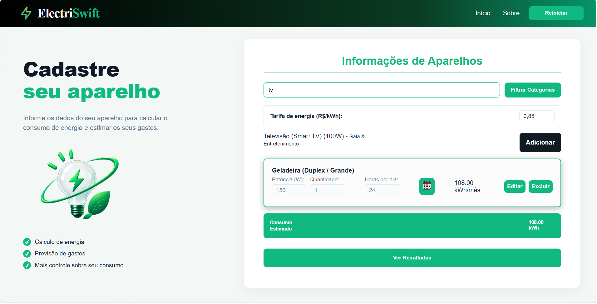
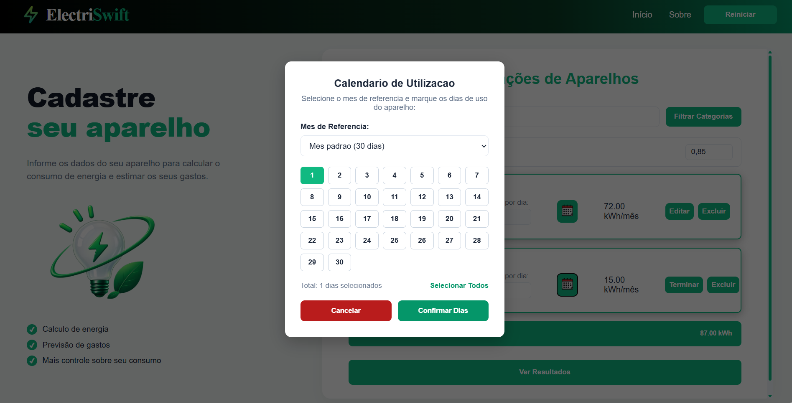
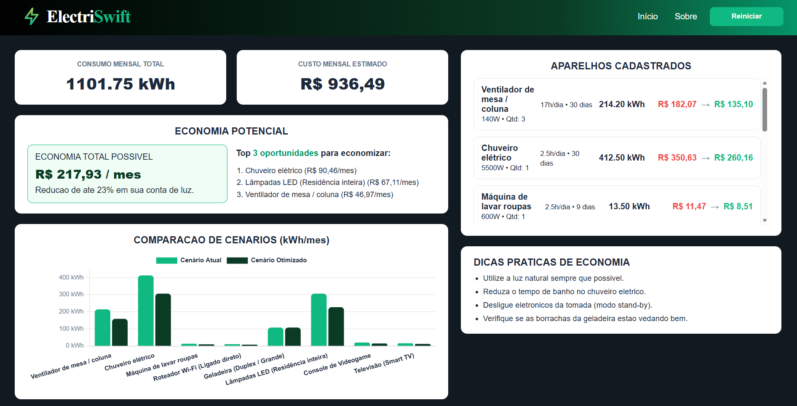
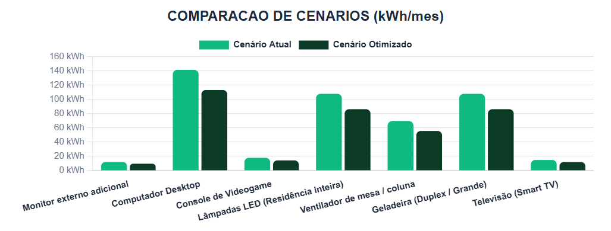

Como Funciona o ElectriSwift no Desktop?
Entenda o fluxo em tela ampla, as etapas do simulador Desktop e a lógica por trás dos cálculos de energia da sua casa.
Fluxo da Versão Desktop
Na versão Desktop, a Etapa 01 organiza a experiência em formato Split Screen: de um lado a apresentação do cadastro e, do outro, o painel interativo de aparelhos. Você pode buscar itens do catálogo, filtrar por categorias no modal ou adicionar um aparelho personalizado informando nome e potência em Watts (W).

Os novos aparelhos entram no topo da lista para facilitar a edição imediata, e o consumo total estimado é atualizado na tela conforme você adiciona, edita ou exclui itens.

Ao ativar o modo de edição de um aparelho, você ajusta a potência (W), a quantidade, as horas de uso por dia (inclusive com frações de hora) e abre o Calendário Interativo para escolher o mês de referência (28, 30 ou 31 dias) e marcar os dias exatos de utilização.
Você também configura a tarifa de energia em Reais por quilowatt-hora (R$/kWh) para estimar o custo financeiro da simulação.

Ao clicar em Ver Resultados (com ao menos um aparelho cadastrado), a Etapa 02 é exibida em uma visão consolidada para desktop, reunindo o consumo mensal total (kWh), o custo mensal estimado (R$), o destaque de economia potencial e o top 3 de oportunidades de economia.
Na coluna lateral, você acompanha a lista detalhada dos aparelhos cadastrados e dicas práticas para reduzir o consumo no dia a dia. Caso deseje recomeçar, o botão Reiniciar no topo limpa a simulação e retorna para a Etapa 01.

O gráfico interativo com Chart.js compara o Cenário Atual e o Cenário Otimizado de cada aparelho cadastrado em kWh/mês, facilitando identificar quais equipamentos pesam mais na conta e onde o ajuste de rotina gera maior retorno.

A Lógica dos Cálculos
O simulador traduz a potência elétrica, o tempo de uso e a quantidade de aparelhos em energia acumulada no mês:
Consumo (kWh) = (Potência em W ÷ 1000) × Horas/dia × Dias × Quantidade
- Potência (W): consumo nominal do aparelho.
- Divisão por 1000: converte Watts (W) para Quilowatts (kW).
- Dias: quantidade de dias selecionados no calendário (ou referência mensal).
- Custo (R$): consumo em kWh multiplicado pela tarifa informada em R$/kWh.
O custo estimado da simulação segue a relação direta com a tarifa configurada:
Custo Estimado (R$) = Consumo Mensal (kWh) × Tarifa (R$/kWh)
Para projetar o cenário otimizado, o sistema simula uma redução percentual nas horas de uso de cada aparelho (respeitando um piso mínimo), permitindo comparar o consumo atual com uma rotina mais eficiente.
Cenário Otimizado = Consumo Atual × (1 - Redução Percentual)
Aviso: os valores calculados são estimativas aproximadas com base nos dados informados e não substituem a fatura da concessionária (impostos, bandeiras tarifárias e taxas adicionais podem variar).